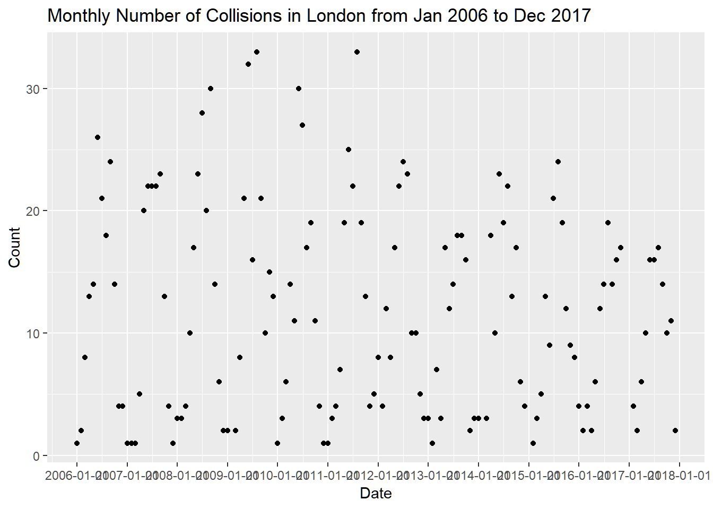
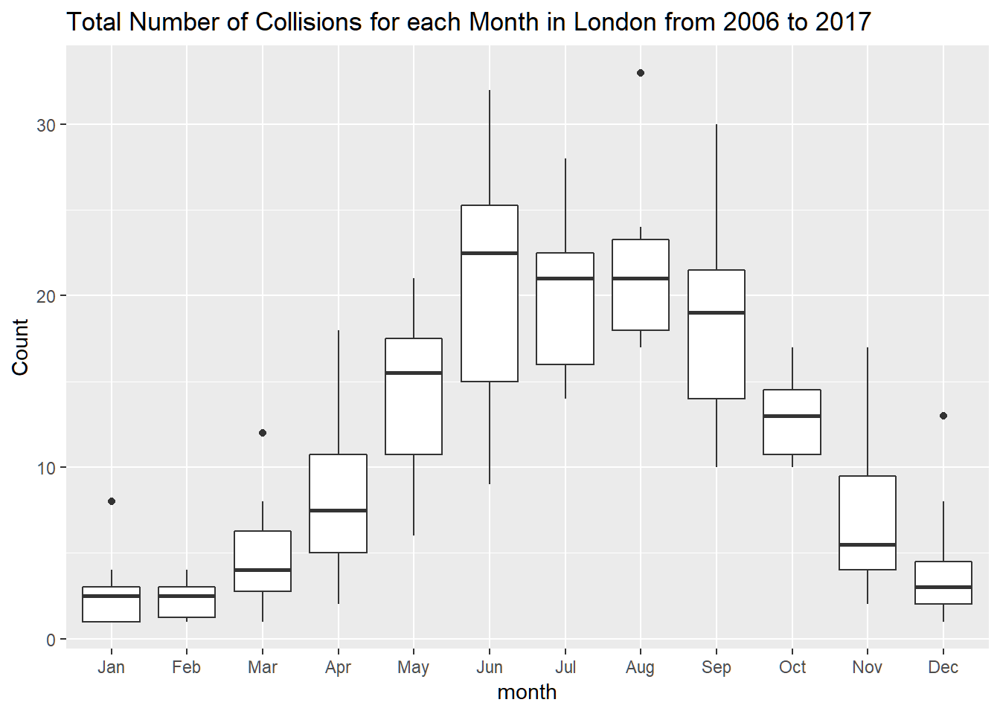
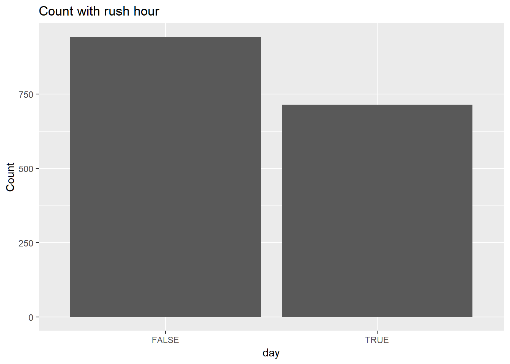
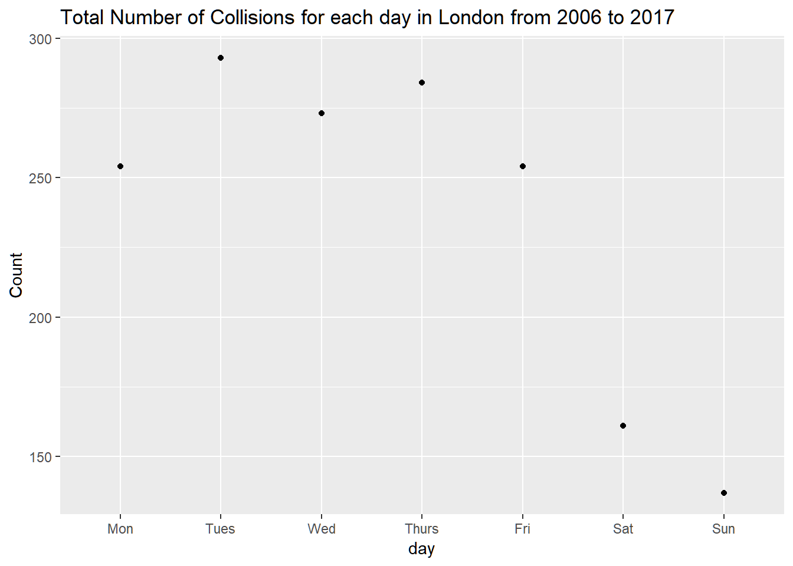

3 Time Effect
3.1 Time factor
# Time range of the data
range(collision$date,na.rm = TRUE)## [1] "2006-01-12 16:15:00 UTC" "2017-12-15 09:00:00 UTC"head(collision %>%
dplyr::select(date,year,month,yearmonth,wday,hour,rushhour,weekend) )## # A tibble: 6 x 8
## date year month yearmonth wday hour rushhour weekend
## <dttm> <int> <int> <date> <chr> <int> <lgl> <lgl>
## 1 2006-01-12 16:15:00 2006 1 2006-01-01 Thursd~ 16 TRUE FALSE
## 2 2006-02-18 13:55:00 2006 2 2006-02-01 Saturd~ 13 FALSE TRUE
## 3 2006-02-24 20:20:00 2006 2 2006-02-01 Friday 20 FALSE FALSE
## 4 2006-03-13 10:00:00 2006 3 2006-03-01 Monday 10 FALSE FALSE
## 5 2006-03-27 19:30:00 2006 3 2006-03-01 Monday 19 FALSE FALSE
## 6 2006-03-28 16:33:00 2006 3 2006-03-01 Tuesday 16 TRUE FALSE3.2 Monthly aggregation for each year
collision_yearmonth <- collision %>%
group_by(yearmonth) %>%
summarise(Count=n())
collision_yearmonth %>%
ggplot(aes(x = yearmonth, y=Count))+
geom_point()+
labs(x="Date",y="Count")+
ggtitle("Monthly Number of Collisions in London from Jan 2006 to Dec 2017") +
scale_x_date(date_breaks = "1 years") 
collision_yearmonth %>%
mutate(month=month(yearmonth)) %>%
ggplot(aes(x=factor(month),y=Count))+
geom_boxplot()+
labs(x="month",y="Count")+
ggtitle("Total Number of Collisions for each Month in London from 2006 to 2017")+
scale_x_discrete(breaks=1:12,labels = month.abb ) 
3.3 Yearly aggregation
collision_year <- collision %>%
group_by(year) %>%
summarise(Count=n())
p_year <- collision_year %>%
ggplot(aes(x = year, y=Count))+
geom_point()+
labs(x="Date",y="Count")+
ggtitle("Yearly Number of Collisions in London from 2006 to 2017")+
scale_x_continuous(breaks=2006:2017)+
theme_minimal()
ggplotly(p_year)collision_year_injury <- collision %>%
group_by(year) %>%
summarise(Count=n(),
rNone = mean(injury=="00 none",na.rm=TRUE),
rMinor=mean(injury %in% c("01 minimal","02 minor"),na.rm=TRUE),
rSevere=mean(injury %in% c("03 major","04 fatal"),na.rm=TRUE) )
#
p_year_injury <- collision_year_injury %>%
ggplot(aes(x = year, y=rNone))+
geom_point()+
labs(x="Date",y="Proportion of No Injury")+
ggtitle("Yearly Proportion of No Injury in London from 2006 to 2017")+
scale_x_continuous(breaks=2006:2017)+
ylim(0,1)+
theme_minimal()
ggplotly(p_year_injury)#
p_year_injury <- collision_year_injury %>%
ggplot(aes(x = year, y=rMinor))+
geom_point()+
labs(x="Date",y="Proportion of none or minor Injury")+
ggtitle("Yearly Proportion of none or minor Injury in London from 2006 to 2017")+
scale_x_continuous(breaks=2006:2017)+
ylim(0,1)+
theme_minimal()
ggplotly(p_year_injury)#
p_year_injury <- collision_year_injury %>%
ggplot(aes(x = year, y=rSevere))+
geom_point()+
labs(x="Date",y="Proportion of Severe Injury")+
ggtitle("Yearly Proportion of Severe Injury in London from 2006 to 2017")+
scale_x_continuous(breaks=2006:2017)+
ylim(0,1)+
theme_minimal()
ggplotly(p_year_injury)3.4 Monthly aggregation
collision_month <- collision %>%
group_by(month) %>%
summarise(Count=n())
#month.abb
p_month <- collision_month %>%
ggplot(aes(x = month, y=Count))+
geom_point()+
labs(x="Month",y="Count")+
ggtitle("Number of Collisions for each month in London from 2006 to 2017")+
scale_x_continuous(breaks=1:12,labels = month.abb ) #+
#theme_minimal()
ggplotly(p_month)3.5 Rush hour
collision %>%
ggplot(aes(rushhour))+
geom_bar()+
labs(x="day",y="Count")+
ggtitle("Count with rush hour")
collision_rush <- collision %>%
filter(!weekend) %>%
group_by(year,rushhour) %>%
summarise(Count=n())
t.test(x = collision_rush$Count[collision_rush$rushhour],
y = collision_rush$Count[!collision_rush$rushhour],
paired = TRUE,alternative = "greater")##
## Paired t-test
##
## data: collision_rush$Count[collision_rush$rushhour] and collision_rush$Count[!collision_rush$rushhour]
## t = -4.5584, df = 11, p-value = 0.9996
## alternative hypothesis: true difference in means is greater than 0
## 95 percent confidence interval:
## -12.31339 Inf
## sample estimates:
## mean of the differences
## -8.8333333.6 Day aggregation
collision_wday <- collision %>%
group_by(wday) %>%
summarise(Count=n())
collision_wday$wday <- ordered(collision_wday$wday,c("Monday","Tuesday","Wednesday",
"Thursday","Friday","Saturday","Sunday"))
levels(collision_wday$wday) <- c("Mon","Tues","Wed","Thurs","Fri","Sat","Sun")
collision_wday %>%
ggplot(aes(x = wday, y=Count))+
geom_point()+
labs(x="day",y="Count")+
ggtitle("Total Number of Collisions for each day in London from 2006 to 2017")
collision$wday <- ordered(collision$wday,
c("Monday","Tuesday","Wednesday",
"Thursday","Friday","Saturday","Sunday"))
p_wday <- collision %>%
ggplot(aes(wday))+
geom_bar()+
labs(x="day",y="Count")+
ggtitle("Total Number of Collisions for each day in London from 2006 to 2017")
ggplotly(p_wday) #One more step beyong ggplot to make it interactive3.7 Hour aggregation
collision_hour <- collision %>%
filter(!weekend) %>%
group_by(hour) %>%
summarise(Count=n())
#collision_hour <- collision_hour %>% mutate(prop=Count/sum(Count))
#print(tbl_df(collision_hour), n=25)
#Interactive figure with plotly
p_hour <- collision_hour %>%
ggplot(aes(x = hour, y=Count))+
geom_point(colour="red")+
geom_line(colour="red")+
labs(x="",y="")+
ggtitle("Total Number of Collisions for each hour in London from 2006 to 2017")+
scale_x_continuous(limits=c(0,23),
breaks= seq(0,23,2),
labels=c("12 am",
paste(seq(2,10,2),"am"),
"12 pm",
paste(seq(14,22,2)-12,"pm")))+
theme_bw()+
theme(rect=element_blank(),
panel.grid=element_blank(),
axis.title.y=element_blank(),
axis.text.y=element_blank(),
axis.ticks.y=element_blank(),
axis.text.x = element_text(angle = 30, hjust = 1))
ggplotly(p_hour) #One more step beyong ggplot to make it interactive#Filter out weekends and adults
# !is_kid means not a kid
collision_hour1 <- collision %>%
filter(weekend,!is_kid) %>%
group_by(hour) %>%
summarise(Count=n())
#Filter out weekends and kids
collision_hour2 <- collision %>%
filter(weekend,is_kid) %>%
group_by(hour) %>%
summarise(Count=n())
collision_hour12 <- rbind(collision_hour1,collision_hour2) %>%
mutate(AgeGroup=c(rep("adult",nrow(collision_hour1)),
rep("kid",nrow(collision_hour2))))
p_hour2 <- collision_hour12 %>%
ggplot(aes(x = hour, y=Count,color=AgeGroup))+
geom_point()+
geom_line()+
#facet_wrap(~AgeGroup)+
labs(x="hour",y="Count")+
ggtitle("Total Number of Collisions for each hour (weekend) in London from 2006 to 2017")+
scale_x_continuous(limits=c(0,23),
breaks= seq(0,23,3),
labels=c("12 am",
paste(seq(3,9,3),"am"),
"12 pm",
paste(seq(15,21,3)-12,"pm")))+
ylim(0, 30)
ggplotly(p_hour2) #One more step beyong ggplot to make it interactive#Filter out weekends and adults
# !is_kid means not a kid
collision_hour1 <- collision %>%
filter(!weekend,!is_kid) %>%
group_by(hour) %>%
summarise(Count=n())
#Filter out weekends and kids
collision_hour2 <- collision %>%
filter(!weekend,is_kid) %>%
group_by(hour) %>%
summarise(Count=n())
collision_hour12 <- rbind(collision_hour1,collision_hour2) %>%
mutate(AgeGroup=c(rep("adult",nrow(collision_hour1)),
rep("kid",nrow(collision_hour2))))
p_hour2 <- collision_hour12 %>%
ggplot(aes(x = hour, y=Count,color=AgeGroup))+
geom_point()+
geom_line()+
#facet_wrap(~AgeGroup)+
labs(x="hour",y="Count")+
ggtitle("Total Number of Collisions for each hour (weekday) in London from 2006 to 2017")+
scale_x_continuous(limits=c(0,23),
breaks= seq(0,23,3),
labels=c("12 am",
paste(seq(3,9,3),"am"),
"12 pm",
paste(seq(15,21,3)-12,"pm")))+
ylim(0, max(collision_hour1$Count))
ggplotly(p_hour2) #One more step beyong ggplot to make it interactive